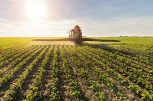

Informações, dicas e curiosidades sobre o campo
A agricultura é uma das atividades mais antigas da humanidade. Ela envolve o cultivo da terra e o manejo de plantas e animais para a produção de alimentos, fibras, combustíveis e outros produtos.
Conheça os principais tipos de agricultura:
agricultura sustentável é um modelo de produção agrícola que busca o equilíbrio entre a produção de alimentos, a preservação do meio ambiente, a justiça social e a viabilidade econômica. Ou seja, ela não se preocupa apenas em produzir, mas em fazer isso de forma que não esgote os recursos naturais, garanta o bem-estar dos trabalhadores e seja financeiramente sustentável para os agricultores a longo prazo. respeitando o meio ambiente, o bem-estar social e a viabilidade econômica. Ela utiliza técnicas como rotação de culturas, uso consciente da água e compostagem natural.
" allowfullscreen>Quer saber mais ou sugerir melhorias? Envie um e-mail para: agricultura@email.com